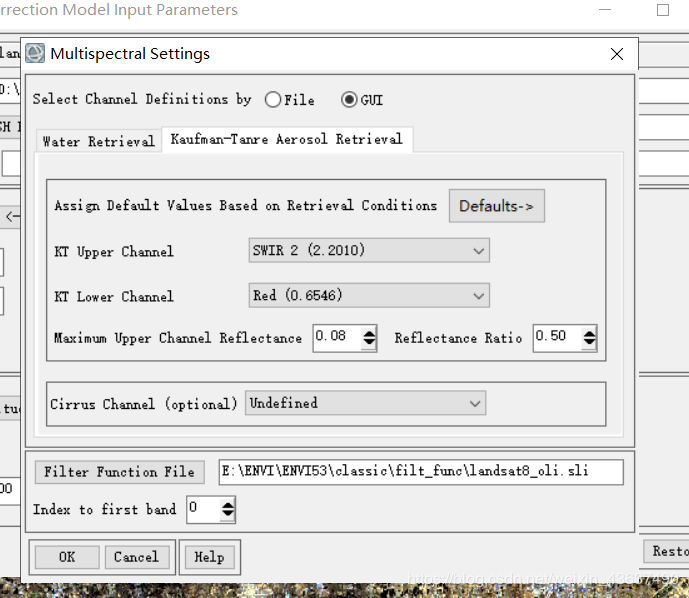

一、图像处理整体思路步骤
1、多光谱波段
1.1多光谱波段的辐射定标
1.1.1 Envi导入Landset8影像

Landset8波段调整
OLI对波段进行了重新调整，比较大的调整是OLI Band5(0.845–0.885 μm)，排除了0.825μm处水汽吸收特征；
OLI全色波段Band8波段范围较窄，这种方式可以在全色图像上更好区分植被和无植被特征；
此外，还有两个新增的波段：蓝色波段 (band 1; 0.433–0.453 μm) 主要应用海岸带观测，短波红外波段(band 9; 1.360–1.390 μm) 包括水汽强吸收特征可用于云检测；
近红外band5和短波红外band9与MODIS对应的波段接近，详情参考表。
波段组合


图像预处理
由于Landsat数据已经经过几何校正和地形校正，所以直接进行辐射定标和大气校正。
1.1.2多光谱波段辐射定标
- 选择File->Open，选择_MTL.txt文件打开；
- 选择ToolBox/Radiometric Correction/Radiometric Calibration，选择多光谱数据（MultiSpectral）；
- 参数设置如下：
定标类型（Calibration Type）：辐射亮度值（Radiance）；
输出储存顺序 （Output Interleave）：BIL；
输出数据类型：Float；
单击FLAASH Settings按钮，自动获取辐射亮度单位转换系数Scale Factor：0.1,其他选项是方便用于
FLAASH大气校正；
最后自行设置输出路径。

1.2多光谱波段的大气校正
- 打开Radiometric Correction
- ->Atmospheric Correction Module
- -> FLAASH Atmospheric Correction工具
- 导入经过辐射定标的数据radiometric_result.dat，因为在辐射定标中已经进行了单位换算，所以在弹出的Radiance Scale Factors中选择第二项
由于FLAASH大气校正需要影像区域的平均高程，所以可以使用ENVI自带全球高程数据进行计算。
File——Open World Data——Elevation,打开ENVI自带的全球900mDEM数据;
将需要计算高程数据的影像打开（需要带坐标信息），可以放大看到影像数据叠加在DEM数据上
- 打开工具箱中的Statistics——Compute Statistics,在输入文件对话框中选择GMTED2010.jp2数据，再单击Stats Subset，单击File，选择需要统计高程信息对应的图像，然后OK.
- 之后的参数均设置为默认。最后得到统计的平均高程信息，可以看到影像平均高程为256.626m（下图）
- 随后回到FLAASH工具，设置其他参数。传感器类型Sensor Type为Landsat-8 OLI，平均地面高程Ground Elevation为0.256km，大气模型根据帮助文档中的大气模型表进行选择，根据影像成像时间为3月，影像中心纬度为34°确定大气模型为MLS。气溶胶模型选择城市Urban。

- 设置的FLAASH参数、

- 同时还要设置多光谱参数，进入Multispectral Settings，将Default设置为Over-Land Retrieval Standard(600：2100)

- 其他参数按照默认设置，最后点击Apply进行大气校正。大气校正结果如图11所示，会显示估算能见度和平均水汽柱。
FLAASH过程中出现“内存资源不足”的错误可以参考这篇博客：FLAASH大气校正过程中内存资源不足解决方法
- FLAASH大气校正结果

2、全色波段
2.1全色波段的辐射定标
选择ToolBox/Radiometric Correction/Radiometric Calibration，选择全色波段（Panchromatic）；
参数设置：
- Calibration Type：Reflectance，
- Output Data Type：UInt，
- Scale Factor:10000；

- 点击OK输出
3、图像融合
- 打开 ToolBox/ Image Sharpening /Gram-Schmidt Pan Sharpening
- 在文件选择框中分别选择第1.2步中大气校正之后多光谱数据作为低分辨率影像（Low Spatial）
- 在文件选择框中第2.1步中辐射定标后的全色数据作为高分辨率影像（High Spatial）
- 单击OK。打开Pan Sharpening Parameters面板
- 参数设置：
- Sensor：landsat-8 oli
- 重采样方法（Resampling）：Cubic Convolution
- 输出格式为：ENVI